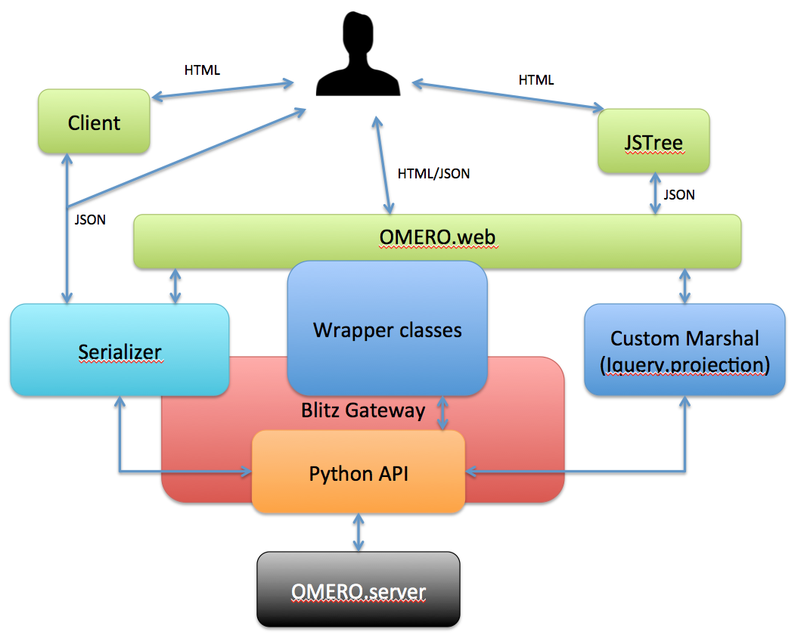

OMERO.web modernisation
Tuesday Group Meeting
19th January, 2016
Will Moore | Aleksandra Tarkowska
Talk outline
- Requirements / What needs fixing?
- Current state of OMERO.web
- Evaluating libraries & tools
- Proposed Javascript changes
- Proposed backend changes
Requirements / What needs fixing?
- Frontend
- Outgrown original design
- "jQuery soup" - fragile to change
- Aging codebase
- Make use of new web tech & features (E.g. routing)
- Expose reusable webclient API (JS & Webservices)
- Improve ability of 3rd party developers to configure (especially for viewer)
- Deploy web code as Desktop app
- Backend
- Performance and scalability
- Super easy installer / individual packages
Current state of OMERO.web (1...)
- Django templates: dynamically generated HTML on the server
- jQuery & AJAX updates the page in browser
Mostly loading data as html, some calls load json - 'top-level' pages in one application:
data, tags, public, search, history
- JSTree used to load data, trigger other panels to load selected items
- Plugin framework for users to add right / centre panels (webtagging)
Current state of OMERO.web (2...)
- Approx 3k lines of js in static files
- Approx 6k lines embedded in HTML
- Not linted (jshint)
- Adds to page size of each request
- Separate js files not concatenated, minimised etc
- See PR to improve webclient docs
Current state of OMERO.web (...3)
- Approx 5k lines of Python in webclient views.py
- Not very many RESTful webservices
- No serializers.
- Not well maintained HTTP Session backend
- Lack of efficient cache backend
- Limited usage of Public user
- Still supporting Django 1.6
- Lack of pip installer
Questions
- Adopt an "MVC" framework?
- Start from scratch or update webclient?
- Use javascript build tools?
Javascript MVC frameworks
- Backbone (OMERO.figure, trello): lightweight library
- Angular, from Google: most popular, 2-way binding
- Ember (Discourse): strict rules, good for teams
- React.js (facebook, OMERO.webtagging #37 ): declarative, "view" part of MVC
- Hundreds more!
- Objections to frameworks: Slow on Mobile, Cost of learning, longevity?
Evaluating React.js: Centre Panel
- Centre panel populated from jsTree data:
#4242
- Uses unscore.js template to create HTML
-
Bug: right panel scrolls on selection change
#4297:
# If it's just a selection change, # simply highlight (don't re-render whole panel) if (parentId === newParentId && event.type !== "load_node" && event.type !== "delete_node") { highlightSelectedThumbs(selected); return; } -
Bug: Also re-render on copy & paste
#4336:
if (parentId === newParentId + && event.type !== "copy_node" + && event.type !== "create_node" && event.type !== "load_node" && event.type !== "delete_node" && event.type !== "refreshThumb" {
Using React.js for centre panel #4413
- Don't have to worry about what changes are expected from different events
- Simply declare how jsTree data maps to centre panel HTML
- E.g. image selected -> class 'ui-selected'
- E.g. iconSize -> img width
< ImageIcon >
render: function() {
var image = this.props.image,
cls = [];
if (image.selected) {cls.push('ui-selected')};
if (image.fsSelected) {cls.push('fs-selected')};
return (
< li className={"row " + cls.join(" ")} >
< img width={this.props.iconSize + "px"}
...
Do we need a Javascript MVC?
- We already have the jstree, to manage containers
- Other places may be simple enough not to have a separate Data Model
- Exception to this is the viewer, which already has a js Model
Build tools
- Concatenate, transpile (JSX, ES2015), minimise, dependency management etc
- Currently we use Django pipeline (can use Babel for ES2015)
- Grunt (general purpose task runner, OMERO.figure)
- webpack (more recent, OMERO.webtagging #37 )
- Others (gulp, Broccoli etc)
- Need to investigate options further
- Not urgent: Introduce as required
Web -> Desktop application
- Use Cases:
- Read & write local files - is this useful?
- Launch other applications, E.g ImageJ, Insight
- Evaluate Electron.io (from github)
Proposed Javascript changes
- Update webclient, don't start from scratch
See: Redit advice | Never start from scratch - Keep jstree - Improve decoupling from other components
- Move js code into static files (not in html) #4389
- Fewer top-level pages:
data, search, history (eventually just one?)
- All AJAX requests use JSON (not HTML) & moved to webgateway/api/ #4357
- Use React.js as needed
Backend Design
RESTful webservices
We already cover basic data management in JSTree
https://omero.host/webclient/api/...
Next step:
- Focus on Metadata panel as it became a bottleneck
- Integrate serialisers (e.g. omero-marshal)
Decoupling

Search engine powered by OMERO
- Search as a separate web application
- Useful for public repository
Cache backend #11517
- Memcached - simple in-memory cache
- Redis - flexible and complex an in-memory key-value store: highly scalable, persistent data store
- Redis used as:
- Session store
- Rendering data
- JSON response
Q:Future of webgateway cache?
Installer
- OMERO.web and OmeroPy are part of the server package
- Simple installer
pip install omeroweb omeropy